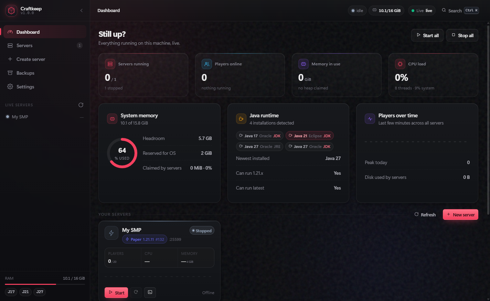
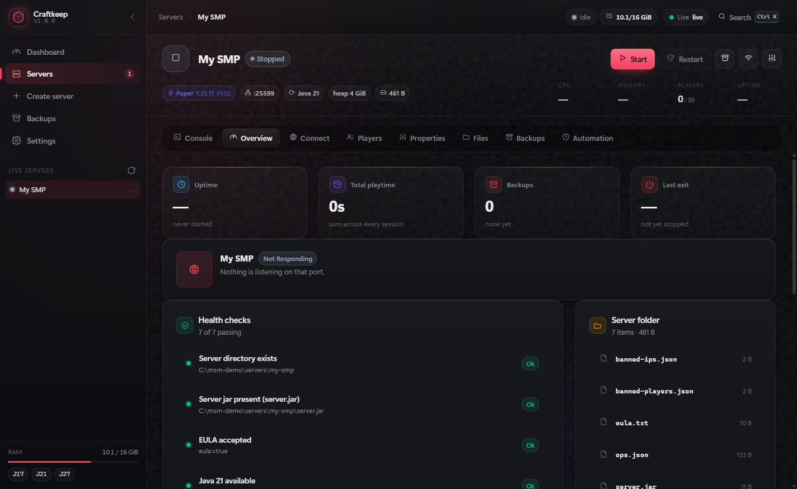
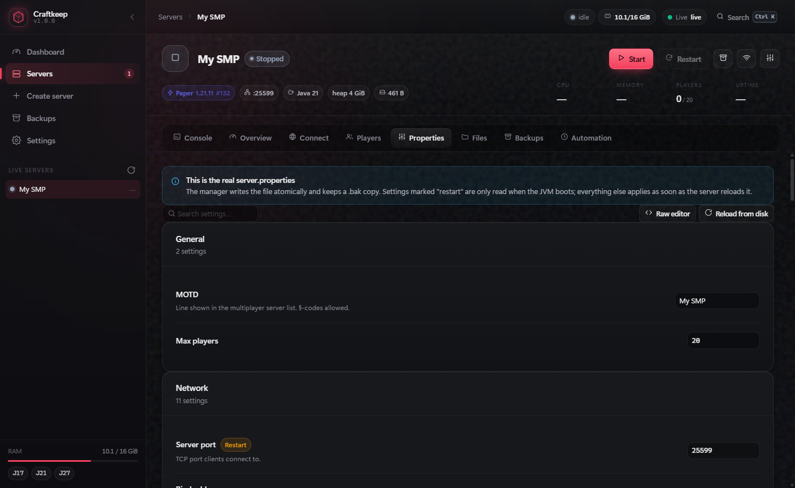
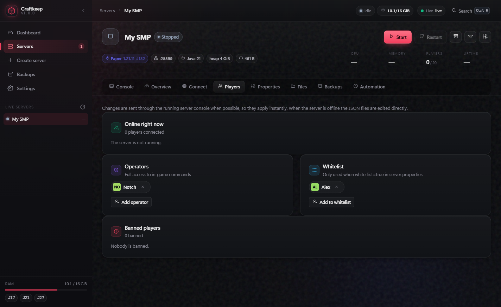

Free · Open source · Windows 10/11
Run a Minecraft server without the command line
One desktop app that provisions Paper, Fabric or Vanilla, works out which Java the version needs, streams the console live, keeps scheduled backups, and gets players in from anywhere — even on connections where port forwarding is impossible.
Installer and portable zip · no admin rights needed

What it does
Everything a server host should handle, so you never touch a jar file, a flag or a batch script.
Real provisioning
Vanilla, Paper and Fabric with every version fetched from the source of truth
(Mojang, PaperMC, Fabric Meta). The jar's SHA-256 is verified where the provider
publishes one. EULA accepted, server.properties tuned, startup script written.
Live console, no terminal
Streaming stdout and stderr with command input, coloured log levels, and a command palette (Ctrl+K) for the things you do often — restart, backup, broadcast a message to players.
Players can actually join
Detects carrier-grade NAT — the case where port forwarding cannot work no matter how the router is configured — and sets up a playit.gg tunnel in one click. UPnP is used when it genuinely helps.
Backups & schedules
Zip backups of worlds and configuration, automatic retention, and schedules for restarts and backups. A restart can take a safety backup first.
Files, players & properties
Edit server.properties with descriptions for every setting, manage ops,
whitelist and bans, and browse server files — all from the app.
Java handled for you
Detects the JDKs you already have, picks the right major version for each server release, and offers to fetch a matching Temurin JDK from Adoptium when one is missing.
Download
Windows 10 or 11, 64-bit. Both downloads are also on the GitHub releases page.
Installer
Adds the app to your user folder with Start Menu and desktop shortcuts. Per-user — no administrator rights needed.
Minecraft-Server-Manager-Setup.exePortable .zip
Unzip anywhere and run Craftkeep.exe. Nothing is installed; keep the folder together.
Minecraft-Server-Manager-win-x64.zipSHA256SUMS.txt and step-by-step notes (HOW-TO-INSTALL.txt) if
you want to verify the file before running it:
Get-FileHash .\Minecraft-Server-Manager-Setup.exe -Algorithm SHA256.
Screenshots
The app at rest: health checks, every server setting with a description, and player management.







Requirements
Windows 10 or 11, 64-bit
Per-user install; no administrator rights. Built with Electron, so it looks and behaves like a normal desktop app — tray icon, native menus, notifications.
No Java required to start
If a matching JDK is missing, the setup wizard offers to download Temurin from Adoptium automatically. Existing installs are detected either way.
An internet connection
Server jars, libraries and the tunnel agent are downloaded on demand. After that, your servers run entirely on your machine.